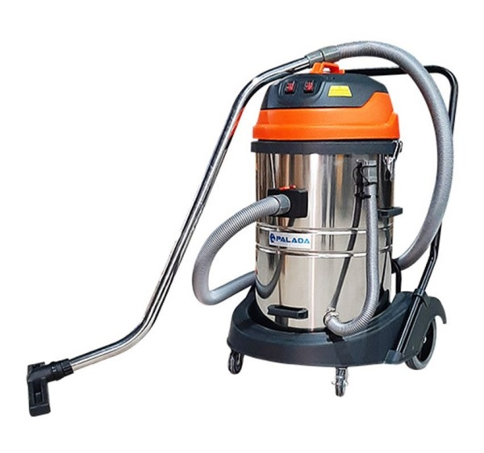
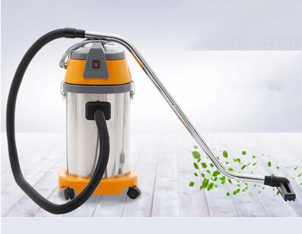
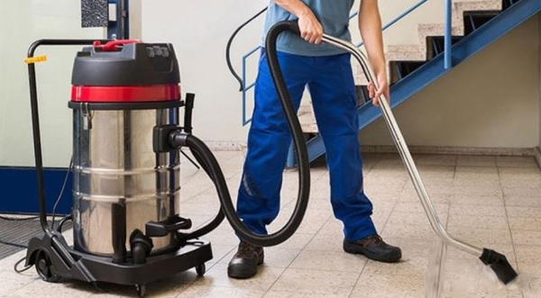
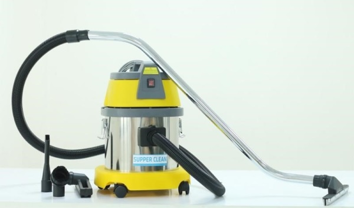
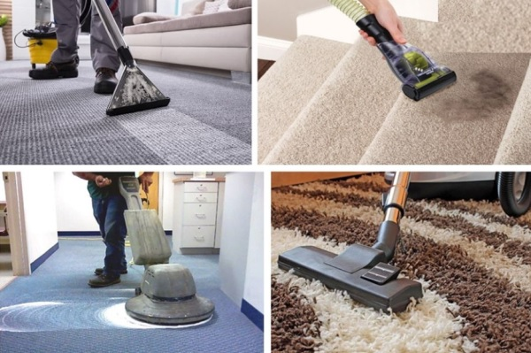
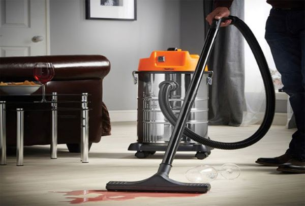
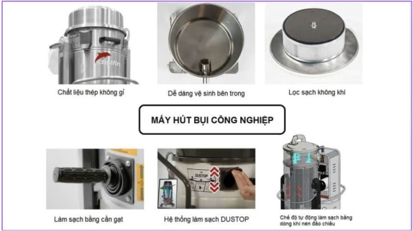
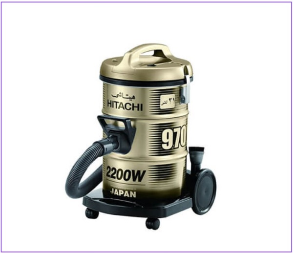
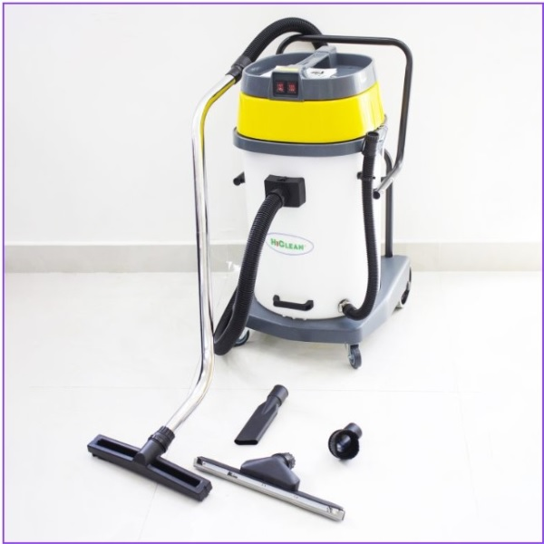

Có nên mua máy hút bụi công nghiệp không? Nên mua loại nào?
Máy hút bụi là một thiết bị gia dụng ngày càng không thể thiếu trong mỗi gia đình. Tuy nhiên để làm sạch ở những không gian lớn như công ty, văn phòng hay nhà xưởng thì máy hút bụi thông thường không thể đáp ứng. Chính vì vậy, máy hút bụi công nghiệp là sự lựa chọn tối ưu cho không gian rộng rãi như vậy. Tham khảo ngay bài viết để biết có nên mua máy hút bụi công nghiệp không? Nên mua loại nào thì phù hợp.

Máy hút bụi công nghiệp là gì?
Máy hút bụi công nghiệp là thiết bị vệ sinh, loại máy hút bụi có công suất lớn, dung tích thùng chứa lớn, lực hút mạnh mẽ. Ngày nay, nó được sử dụng để hút bụi, rác thải tại những nơi có diện tích rộng lớn cũng như cần dọn dẹp, vệ sinh nhiều như nhà xưởng, văn phòng, khách sạn,…
Ngoài những chất thải dễ xử lý, máy hút bụi công nghiệp có thể loại bỏ các chất thải công nghiệp, bụi bẩn dày, khói hàn, dung dịch bám dính và cả những chất thải hóa chất độc hại. Hơn nữa, máy hút bụi được ứng dụng trong công nghiệp là giải pháp tối ưu để tái chế và thu hồi dầu bị tràn nhanh chóng và gọn lẹ nhằm đảo bảo an toàn cho người sử dụng.

Máy hút bụi công nghiệp có những ưu và nhược điểm nào?
Mỗi loại máy hút bụi công nghiệp sẽ có những ưu điểm và nhược điểm khác nhau tùy theo mục đích sử dụng vệ sinh của mỗi cá nhân.
Ưu điểm
Khi cân nhắc có nên mua máy hút bụi công nghiệp hay không thì bạn nên xem xét những ưu điểm sau:
♦ Công suất lớn: Đa số các dòng máy đều có công suất lớn nên có lực hút rất mạnh. Vì vậy giúp tiết kiệm được năng lượng và thời gian trong quá trình dọn dẹp.
♦ Đa chức năng: Máy được thiết kế để có thể hút tất cả các loại rác thải như là nước bẩn, bụi bám lâu ngày, các mảnh vụn lớn,…
♦ Thời gian sử dụng kéo dài: So với các dòng máy hút gia đình thông thường chỉ có thể hoạt động từ 60 đến 90 phút. Tuy nhiên, đối với máy hút công nghiệp sẽ có thời gian sử dụng kéo dài hơn.
♦ Thiết kế phù hợp với nhu cầu: Máy hút bụi cho công nghiệp thường sẽ khá cồng kềnh. Tuy nhiên, hiện nay máy hút công nghiệp được thiết kế rất nhỏ gọn phù hợp với mọi gia đình và nhu cầu của người dùng.
Nhược điểm
Ngoài những ưu điểm trên thì máy hút bụi công nghiệp vẫn có những nhược điểm như sau:
♦ Tiêu hao nhiều nhiên liệu: Do máy có công suất lớn nên trong quá trình sử dụng sẽ bị tiêu hao một lượng lớn nguyên liệu.
♦ Giá thành cao: Vì máy hút bụi có nhiều chức năng và công suất lớn nên có giá thành tương đối cao. Nhìn chung sẽ có giá thành cao hơn máy hút bụi thông thường.
♦ Tiếng ồn lớn: Máy thường phát ra nhiều âm thanh trong quá trình sử dụng. Một phần vì máy có công suất lớn nên việc có tiếng ồn lớn là không thể tránh khỏi.

***Xem thêm: Máy chà sàn nhà xưởng
Tại sao phải sử dụng máy hút bụi công nghiệp
Với những ưu điểm và nhược điểm trên thì bạn có lẽ đã hình dung câu trả lời cho mình có nên mua máy hút bụi công nghiệp. Tuy nhiên để làm rõ và giúp bạn có cái nhìn tổng quát hơn về loại thiết bị này, sau đây là một vài lý do bạn cần nên trang bị một chiếc máy hút bụi công nghiệp:
Tạo không gian thoáng mát, sạch sẽ
Máy hút bụi công nghiệp có lực hút mạnh mẽ và được phân chia thành nhiều loại với nhiều công năng và công suất hoạt động khác nhau. Những chiếc máy có công suất từ 1000W và có dung tích thùng chứa khoảng 15 lít sẽ phù hợp với mục đích vệ sinh cho không gian gia đình.
Loại máy này có ưu thế hơn cái loại máy hút bụi thông thường vì nó được trang bị thêm các chức năng khác như hút bụi, lọc bụi, thổi bụi,… Nó giúp loại bỏ đi mọi chất bẩn cứng đầu, nước thải, lông tóc vật nuôi, hút sạch bụi bẩn, rác thải, vi khuẩn,… mang lại không gian sống thoáng mát, sạch sẽ.

Mẫu mã đa dạng phù hợp
Máy hút bụi công nghiệp hiện nay trên thị trường có nhiều mẫu mã, tính năng khác nhau. Nó được tích hợp nhiều chức năng hiện đại đáp ứng nhu cầu sử dụng của nhiều đối tượng theo các tầm giá khác nhau. Các loại máy như: máy chà sàn, xe quét bụi, đánh bóng,… là các mẫu mã phổ biến. Tùy theo nhu cầu mà bạn có thể chọn một dòng máy thích hợp.
Tiện lợi và làm sạch nhanh chóng
Khi đã quyết định có nên mua máy hút bụi công nghiệp hay không, thì người dùng cũng cân nhắc rất nhiều đến khả năng làm sạch của nó. Việc lựa chọn máy hút bụi nên có tích hợp hệ thống túi lọc có 2 tầng lọc bụi tiêu chuẩn. Hơn nữa, một chiếc máy hút bụi công nghiệp tốt nên có độ giữ bụi cao và lọc kháng khuẩn cho môi trường xung quanh. Từ đó giúp cho việc làm sạch dễ dàng, nhanh chóng và tiện lợi hơn.

Rút ngắn thời gian và công sức
Một chiếc máy hút bụi công nghiệp có khả năng làm sạch nhanh chóng, đồng thời cũng giúp tiết kiệm thời gian và công sức vệ sinh hơn. Do đó, nó sẽ giúp bạn có thêm thời gian cho các hoạt động khác, rất phù hợp với người luôn bận rộn với công việc, không thể dành hàng giờ dành cho việc dọn dẹp.
Bảo vệ sức khỏe cho con người
Khi môi trường sống của bạn trở nên sạch sẽ và thoáng khí thì sức khỏe của bạn cũng được cải thiện đáng kể. Máy hút bụi công nghiệp giúp loại bỏ bụi bẩn, vi khuẩn,… hỗ trợ thanh lọc cơ thể. Từ đó gia tăng hiệu suất làm việc, mang giá trị sản xuất hơn cho công việc.
Có nên mua máy hút bụi công nghiệp hay không?
Tùy thuộc vào nhu cầu sử dụng, bạn có thể lựa chọn thiết bị phù hợp nhất với gia đình của mình.
Nếu bạn cần một máy hút bụi có công suất lớn để sử dụng trong các khu vực rộng lớn như khu công nghiệp, khu chế xuất, cơ sở sản xuất, nhà xưởng hoặc các vùng cần vệ sinh thường xuyên thì máy hút bụi công nghiệp sẽ là lựa chọn tốt nhất.
Tuy nhiên, nếu nhà bạn chỉ cần hút bụi cho các không gian nhỏ và vệ sinh không thường xuyên thì nên cân nhắc lựa chọn máy hút bụi thông thường để tránh lãng phí.
Vậy nên, việc mua máy hút bụi công nghiệp phù hợp sử dụng cho những khu vực có diện tích rộng.

Khi sử dụng máy hút bụi công nghiệp nên lưu ý những gì?
Với những lợi ích mà máy hút bụi công nghiệp mang lại về tính năng, mẫu mã cung như dung tích máy. Sau đây là những lưu ý mà bạn cần quan tâm trước khi mua và trong khi sử dụng máy:
Lựa chọn máy hút bụi công nghiệp uy tín, chất lượng
Việc chọn máy hút bụi công nghiệp của các thương hiệu uy tín, chất lượng cao là quyền lợi khi mua hàng cho người dùng. Giúp tránh được những trường hợp như hàng giả, kém chất lượng gây mất an toàn khi sử dụng. Hơn nữa một dòng máy đến từ thương hiệu uy tín sẽ giúp tối ưu không gian sống mà lại không gây tiếng ồn quá lớn.
Đáp ứng tiêu chuẩn về công suất của máy
Trước khi quyết định chọn máy hút bụi công nghiệp nào tốt thì người dùng cần xác định quy mô, diện tích và không gian của mình. Với những diện tích nhỏ thì nên chọn những máy có công suất từ 1200 – 1600W. Đối với khu vực có diện tích sàn nhỏ hơn 1000m2 thì nên chọn máy từ 1600 – 2500W. Hơn nữa, với những nơi có diện tích mặt sàn lớn thì công suất trên 2500W sẽ là sự lựa chọn tốt nhất.
Kiểm tra tính năng hoạt động và khối lượng của máy
Người dùng cũng nên kiểm tra kỹ tính năng hoạt động và khối lượng của máy trước khi mua để đảm bảo phù hợp với nhu cầu sử dụng. Trong trường hợp muốn mua máy giặt mini nhỏ gọn, bạn nên ưu tiên các dòng máy có khối lượng từ 3 – 4kg, tối đa là 5 – 6kg. Ngoài ra, tính năng độ ồn của máy khi hoạt động bạn cần lưu ý và nên chọn máy có độ ồn từ 4 – 6dB để không gây ảnh hưởng đến người xung quanh.
Hiểu rõ nhu cầu và yêu cầu làm sạch
Bạn cũng không nên làm dụng khả năng làm sạch của máy mà thực hiện các tác vụ không đúng với chức năng. Khi quyết định có nên mua máy hút bụi công nghiệp hay không bạn nên xác định rõ nhu cầu và yêu cầu làm sạch để lựa chọn dòng máy có tính năng tương ứng. Việc hiểu rõ nhu cầu làm sạch của mình sẽ không chỉ giúp máy hoạt động lâu bền mà còn giúp tiết kiệm thời gian.

Nắm rõ cách sử dụng và hoạt động của máy hút bụi công nghiệp
Khi bắt đầu sử dụng máy hút bụi công nghiệp, bạn đọc kỹ hướng dẫn sử dụng để nắm rõ cách sử dụng, nguyên lý hoạt động hay công dụng đi kèm của máy. Từ đó sẽ giúp cho bạn dễ dàng thao tác trong suốt quá trình sử dụng.
Bảo trì và vệ sinh máy thường xuyên
Sau một khoảng thời gian sử dụng thì tốt nhất bạn nên bảo trì và vệ sinh máy hút bụi công nghiệp để đảm bảo máy hoạt động tốt, trơn tru và ổn định. Từ đó có thể nâng cao hiệu quả làm việc và tuổi thọ cho máy. Không chỉ thế, việc kiểm tra định kỳ thường xuyên sẽ giúp bạn phát hiện những lỗi hỏng hóc và kịp thời sửa chữa.
Top 5 dòng máy hút bụi cho công nghiệp tốt nhất hiện nay
Để lựa chọn được máy hút bụi công nghiệp loại nào tốt thì hãy tham khảo 5 dòng máy hot nhất hiện nay:
Máy hút bụi YL637SN49 – Panasonic MC
Một sản phẩm hút bụi công nghiệp vượt trội đến từ thương hiệu Panasonic, có công suất vượt trội lên tới 2300W. Có thể sử dụng cho những khu vực có diện tích lớn mà không tốn quá nhiều thời gian.
Máy hút bụi 970Y/TG 2200W – Hitachi CV
Để đưa ra lựa chọn có nên mua máy hút bụi công nghiệp thì bạn phải xem qua dòng máy đến từ nhà Hitachi. Máy có công suất lên đến 2200W, dung tích chứa 21 lít. Nó có khả năng sử dụng trong thời gian dài mà không bị gián đoạn, đáp ứng diện tích rộng từ 300 – 400m2.

Máy hút bụi công nghiệp Grammy
Máy hút bụi Grammy là một thương hiệu nổi tiếng đến từ Đức. Đây là lựa chọn hàng đầu cho các không gian rộng lớn, giúp dọn dẹp tối ưu và tiết kiệm thời gian. Máy có nhiều tính năng dọn dẹp khác nhau đáp ứng nhu cầu của người dùng, tuy nhiên một điểm trừ là có mức tiêu thụ điện khá cao so với các dòng khác trên thị trường.
Máy hút bụi công nghiệp Sancos
Góp mặt vào top 5 dòng máy hút bụi tốt nhất là Sancos. Đây là dòng máy được trang bị công nghệ cao, cùng với dây chuyền sản xuất hiện đại. Nó được cải tiến phù hợp cho người dùng ở cả thiết kế, mẫu mã và chất lượng sản phẩm.
Máy hút bụi công nghiệp HC70A – Hiclean
Tiếp đến là một dòng máy đến từ nhà Hiclean, nó được thiết kế có 2 motor mạnh mẽ. Nó có thể vừa hút nước và hút được nhiều loại bụi khác nhau. Tuy nhiên, để lựa chọn có nên mua máy hút bụi công nghiệp này hay không thì bạn phải cân nhắc thật kĩ vì máy đem lại tiếng ồn khá lớn.

Lời kết
Trên đây là những lợi ích và lưu ý có nên mua máy hút bụi công nghiệp hay không. Nếu bạn muốn lựa chọn máy hút bụi công nghiệp loại nào tốt thì hãy tham khảo ngay 5 loại được nêu trên. Hy vọng với những thông tin mà chúng tôi cung cấp, bạn đã có thể lựa chọn được cho mình một sản phẩm ưng ý.
***Tìm hiểu thêm: Dịch vụ cho thuê máy chà sàn
 Cho thuê máy chà sàn công nghiệp tại Hà Nội – 02422009188
Cho thuê máy chà sàn công nghiệp tại Hà Nội – 02422009188 Tư vấn cách chọn lựa máy chà sàn nhà gia đình
Tư vấn cách chọn lựa máy chà sàn nhà gia đình Có nên mua máy hút bụi công nghiệp cho gia đình?
Có nên mua máy hút bụi công nghiệp cho gia đình?